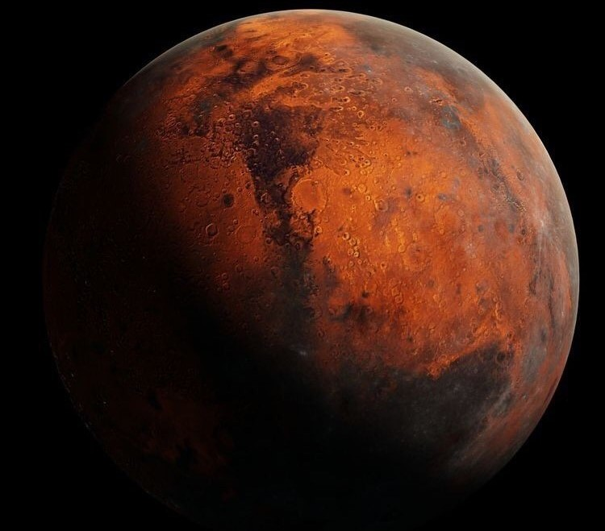

E se nós disséssemos que há uma forma de você ajudar a “treinar” o rover Perseverance, que nesse momento retoma as atividades de exploração de Marte? Pois essa é a premissa de um novo projeto de inteligência artificial (IA) liderado pela Nasa.
 Apelidado de “AI4Mars”, a iniciativa consiste, basicamente, na abertura de um algoritmo de IA com participação pública. A ideia é incentivar participantes a classificarem imagens feitas pelo veículo da Nasa segundo parâmetros da própria agência, que por sua vez fará o upload dessas informações atualizadas no sistema para treinar o Perseverance no reconhecimento aprimorado de terreno e regiões – finalmente melhorando sua capacidade de navegação e coleta de amostras. Se você está com a sensação de já ter lido sobre algo parecido, então parabéns pela boa memória: o AI4Mars é uma espécie de “sucessor espiritual” do programa SPOC (sigla em inglês para “Classificação de Propriedade do Solo e de Objetos”) levantado pela agência para um outro rover ainda ativo no planeta vermelho – o Curiosity. “O [mecanismo] essencial para qualquer algoritmo bem-sucedido é uma boa base de dados”, disse Hiro Ono, pesquisador de IA no Jet Propulsion Lab (JPL) da Nasa, que lidera o projeto AI4Mars. “Quanto mais pedaços individuais de dados estiverem disponíveis, mais o algoritmo vai aprender”.
Basicamente, o AI4Mars expande o conceito do SPOC ao oferecer rótulos de classificação para as inúmeras formações rochosas em Marte, separando-as em diversos pilares, incluindo “nódulos” (pedras de mais ou menos cinco milímetros de diâmetro) e “rochas flutuantes” (“ilhas” rochosas ou formações maiores).
Isso tudo porque o Perseverance, equipado com 19 câmeras de alta definição, trabalha com uma janela relativamente apertada de tempo. O robô fotografa algo entre centenas e milhares de imagens, enviando-as ao centro de controle da Nasa aqui na Terra. Uma vez recebidas as levas de fotos, a Nasa tem apenas algumas horas para desenvolver a próxima ordem de ação do rover – que pode ser algo simples como “ignorar” pedras vistas nas imagens, ou coisas mais complexas, como perfurar e coletar amostras de núcleos rochosos.
“Não é possível para um ou outro cientista avaliar imagens com o devido escrutínio em um tempo tão curto, todo dia”, disse Vivian Sun, cientista do JPL que coordena as operações diárias do Perseverance. “Seria uma enorme economia de tempo se um algoritmo pudesse dizer ‘Eu acho que vi veias rochosas ou nódulos naquela região’, e aí o time científico poderia avaliar com maior detalhamento”.
“Machine learning é bem diferente de um software convencional”, adicionou Ono. “Isso não é como desenvolver algo do zero. Pense nisso como começar a criar um cérebro novo, onde o maior esforço é o de gerar uma boa base de dados para ensinar a esse cérebro como melhor aprender a ler esses dados”.
A grosso modo, o projeto pode permitir que o algoritmo identifique pontos de pesquisa científica automaticamente, ao invés de depender de uma orientação humana vinda de uma ou várias fotos. Mais além, as imagens poderiam ser armazenadas e selecionadas pelo próprio robô, que enviaria apenas aquelas que o algoritmo entendesse como interessantes à pesquisa científica.
Vale lembrar que a missão do Perseverance e da Nasa não é nada simples: em termos bem resumidos, o veículo de exploração deve trafegar a região conhecida como “Cratera Jezero”, onde, há bilhões de anos, existia um imenso lago com um delta de rio.
Na área, a Nasa estima haver maior probabilidade de sinais de vida antiga – provavelmente bacteriana. As formações rochosas da região vêm dessa época isolada, então elas se encontram em um estado praticamente inalterado.
Tudo isso para preparar o mundo para a eventual exploração humana de Marte. A agência espacial americana estima que, a partir de 2030, nós já seremos capazes de enviar missões tripuladas ao planeta vermelho, então quanto mais pudermos saber de antemão, melhor para nós.
Fonte:https://olhardigital.com.br/2021/10/27/ciencia-e-espaco/quer-ajudar-a-treinar-o-perseverance-em-marte-projeto-da-nasa-mostra-como-voce-pode-fazer-isso/